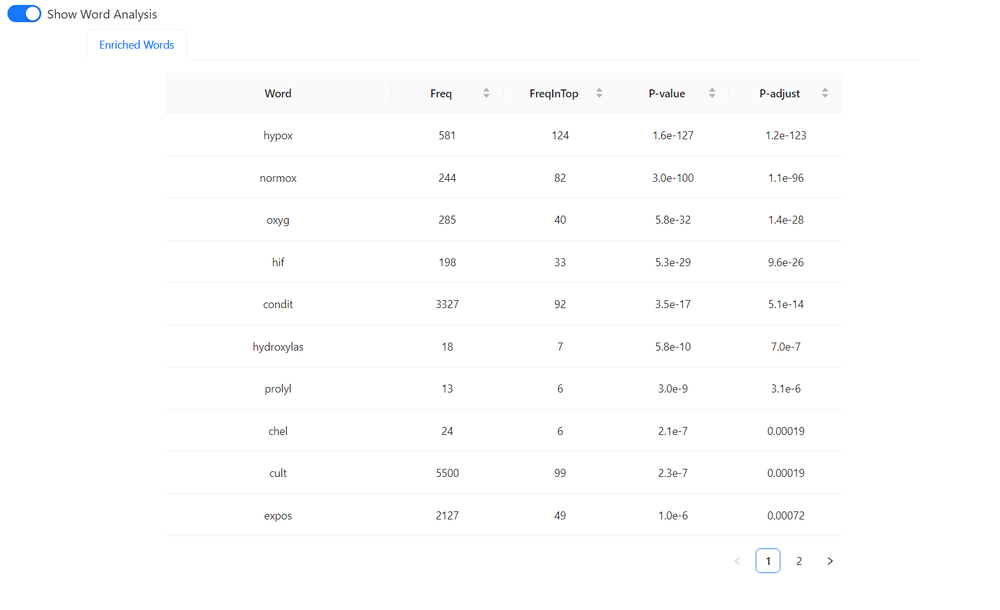
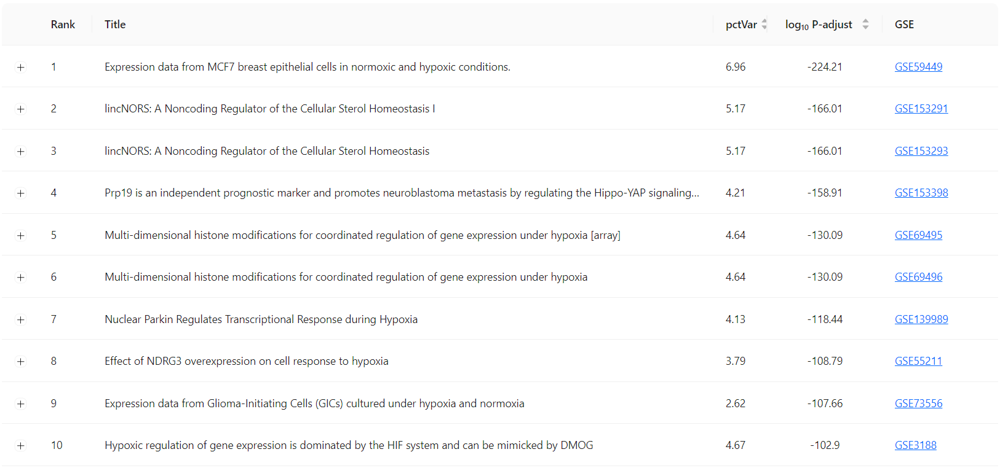
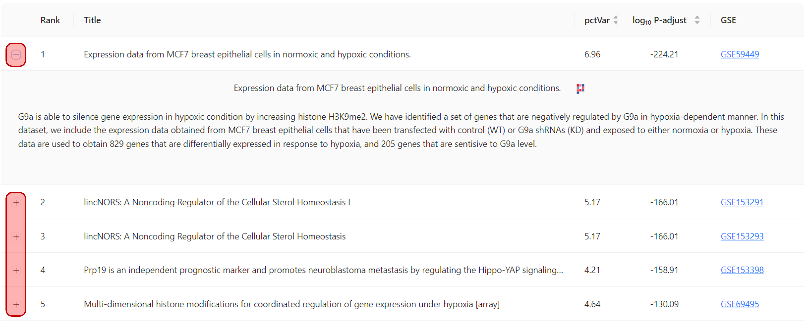

Search Results#
The Search Results section provides detailed findings from your gene query, organized into two key areas: Enriched Words and Gene Set Records.
Enriched Words#
{kind=link}
This table highlights words or terms that are significantly associated with the submitted gene list. The analysis is based on the top 300 records from ranked experiment results, ensuring that the most relevant and statistically significant data is used.
Each word is displayed with the following columns:
Freq: The total frequency of the term across all available experiments in the database.
FreqInTop: The frequency of the term within the top 300 ranked experiments from the dataset.
P-value and P-adjust: These values indicate the statistical significance of the word’s association with your gene list. Lower values reflect stronger relevance. The exact Fisher test is used for this analysis to determine statistical significance.
This section helps you identify common biological themes or experimental conditions related to your gene list.
Gene Set Records#
{kind=link}
This section lists the most relevant gene sets or datasets that match your query. For each record, the following information is provided:
Rank: The order of relevance of the dataset in relation to your gene list.
Title: The title of the dataset, as listed in the NCBI GEO database.
pctVar: Represents the percentage of explained variance in the entire dataset based on the provided gene set. It shows how much of the dataset’s variability is accounted for by your gene set.
log10 P-adjust: The logarithm (base 10) of the adjusted p-value, where more negative values indicate higher statistical significance.
GSE: A direct link to the Gene Expression Omnibus (GEO) database for further exploration of the dataset.
Search Records#
The Search Records field allows you to quickly filter through the gene set records by entering relevant keywords or GSE IDs. This feature helps you efficiently locate specific datasets. This search functionality makes it easier to find relevant data, especially when dealing with a large number of records.
Expandable Gene Set Records#
{kind=link}
In the Gene Set Records section, each record has a plus (“+”) icon next to it. Clicking this icon expands the entry to show more details about the experiment.
Expanded Summary: Once expanded, a brief summary of the experiment is displayed, providing additional insights into the study, such as specific gene expression changes and experimental conditions.
Phantasus Web App Link: In the expanded view, an icon links to the Phantasus web application, which allows you to visually explore the dataset. Phantasus is a powerful tool for interactive data exploration and visualization, enabling further in-depth analysis of the gene expression data.
This functionality enables you to quickly access both a summary of the experiment and additional tools for further investigation.
Conclusion#
The Search Results section delivers a detailed analysis of enriched terms and associated gene sets, providing valuable insights into gene coregulation patterns and related experimental data. With features like keyword search, expandable summaries, and links to visual exploration tools, it helps streamline the analysis process for in-depth gene expression exploration.